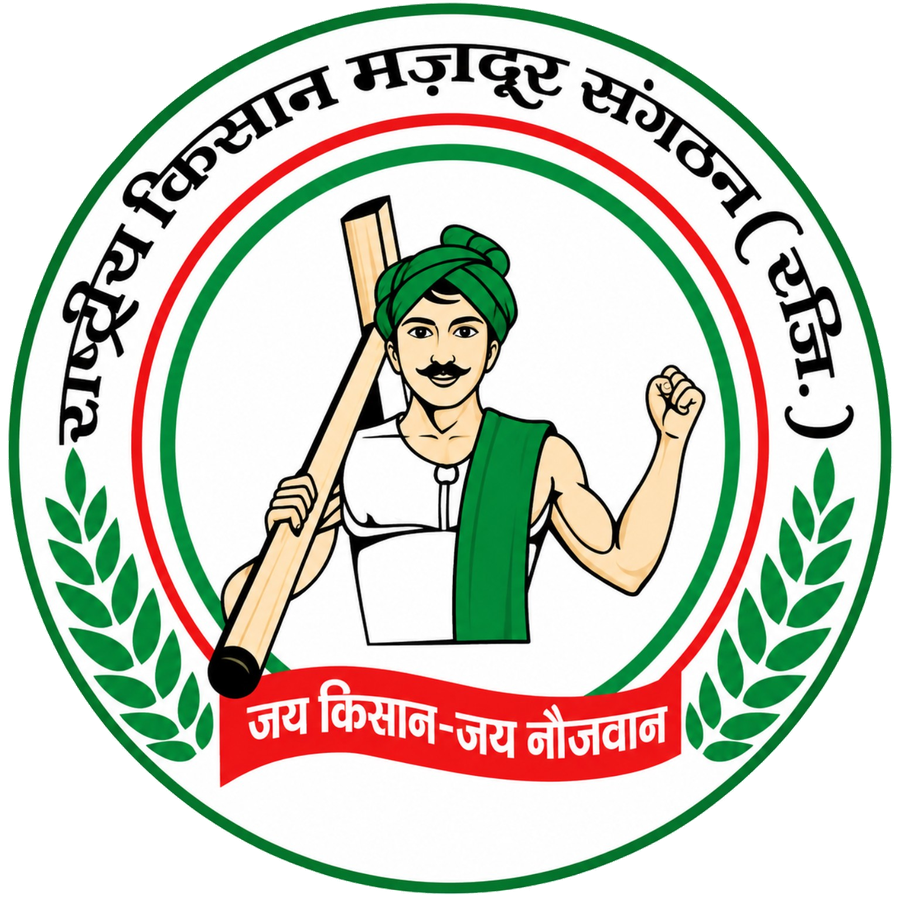

राष्ट्रीय किसान मजदूर संगठन
जय किसान — जय नौजवान
राष्ट्रीय किसान मजदूर संगठन
किसानों का एकमात्र संगठन
☰
होम
संगठन
नेतृत्व
पदाधिकारी खोजें
📖 एक जिंदगी किसानों के नाम
कार्यक्रम
समाचार
गैलरी
दस्तावेज
रिपोर्ट
सदस्य/पदाधिकारी लॉगिन